HopeBox
A Design Thinking case study exploring how HopeBox could reduce reliance on seasonal corporate engagement and build stronger year-round B2B relationships.

Revenue was not
the whole problem.
HopeBox carries year-round programme and support costs, while corporate purchasing and engagement are concentrated around Tet, Mid-Autumn and Christmas.
The project reframed the challenge from a seasonal sales dip into a relationship-management problem: corporate partners had limited reasons and structures to stay engaged between peak periods.
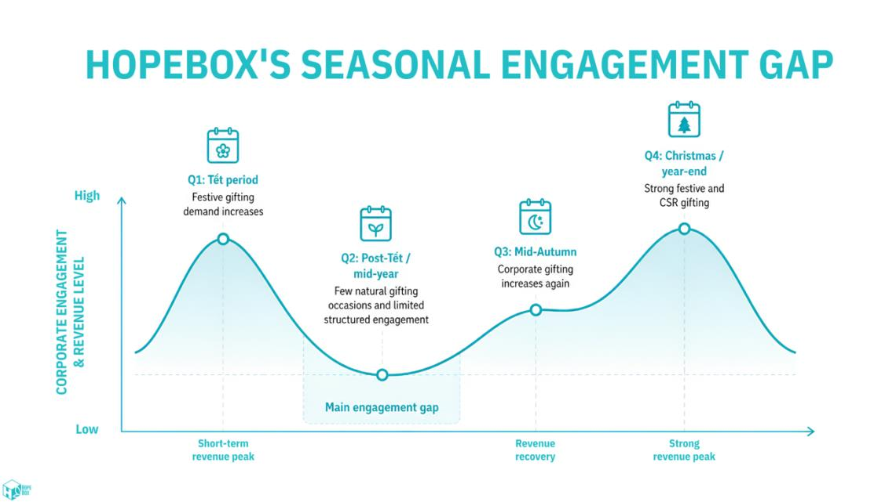
From seasonal spikes to continuous touchpoints.
The team focused on creating a stronger reason for corporate partners to reconnect with HopeBox outside festive campaigns, supporting longer-term partnership continuity rather than one-off engagement.
Focus on the people
who shape continuity.
Corporate B2B partners were prioritised because their procurement decisions, CSR budgets and partnership commitment directly affect HopeBox's revenue continuity.
Stakeholder mapping and empathy work helped clarify what these partners need from an ongoing relationship: visible impact, credible engagement opportunities and a clearer reason to stay connected throughout the year.
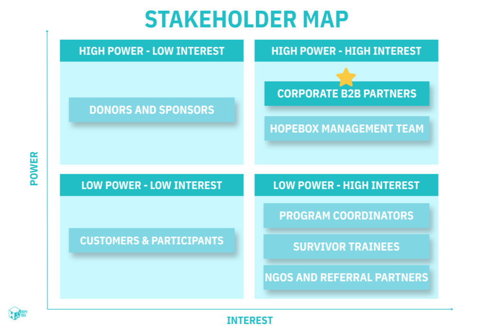
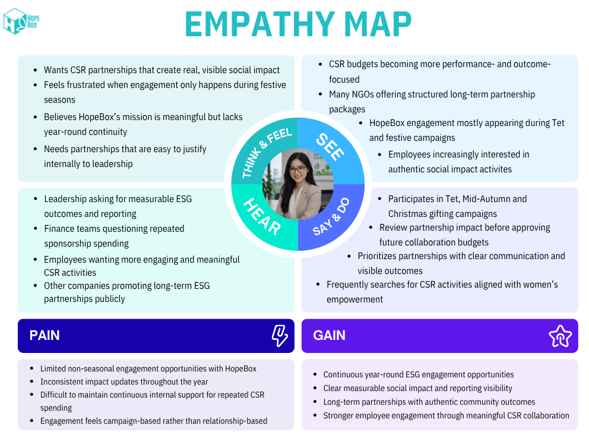
Four routes.
One practical quick win.
The ideation stage generated four possible routes across continuous engagement and strategic partnership.
An Action Priority Matrix then compared implementation effort with strategic impact. The Mid-Year Impact Gala was selected as the strongest quick-win direction.
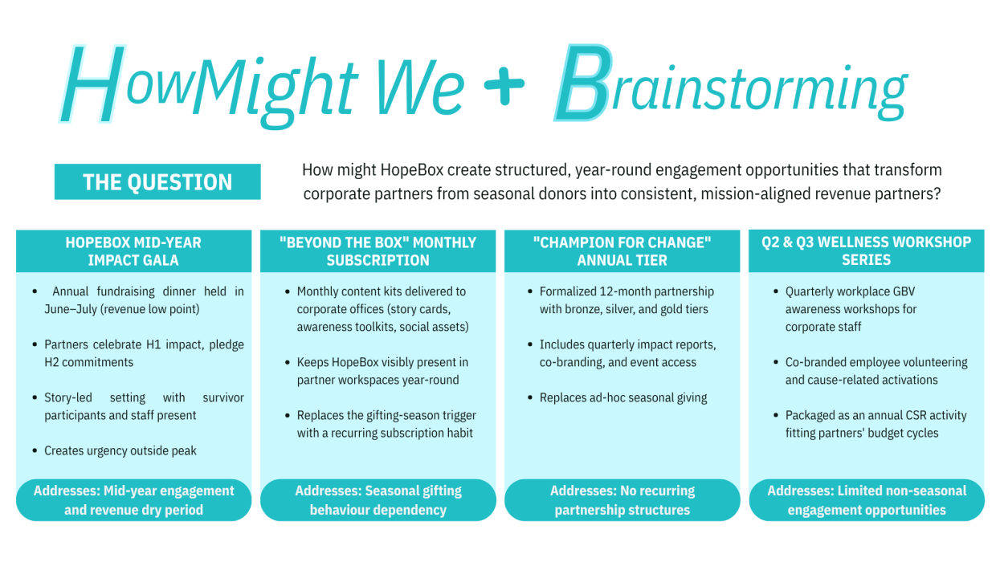
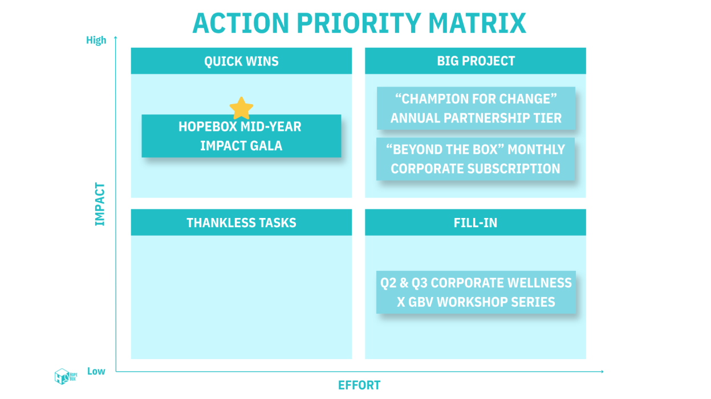
Why the gala?
A dedicated mid-year reason for corporate partners to reconnect during a low-engagement period.
What it unlocks
A platform for fundraising, networking, ESG storytelling, sponsorship conversations and follow-up communication.
Turn the concept
into a system.
The proposal was translated into a connected set of artefacts rather than a single event visual.
The prototype system covered the gala experience, partnership collateral, impact storytelling and post-event digital recognition across the partner journey.
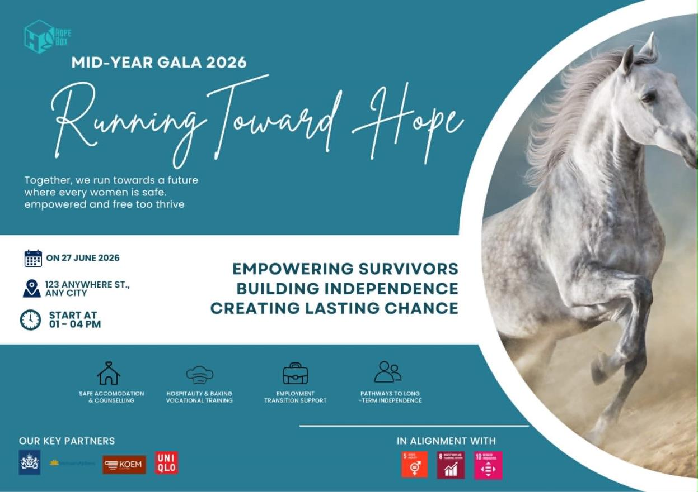
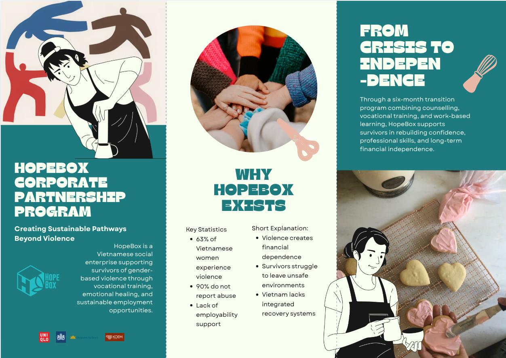
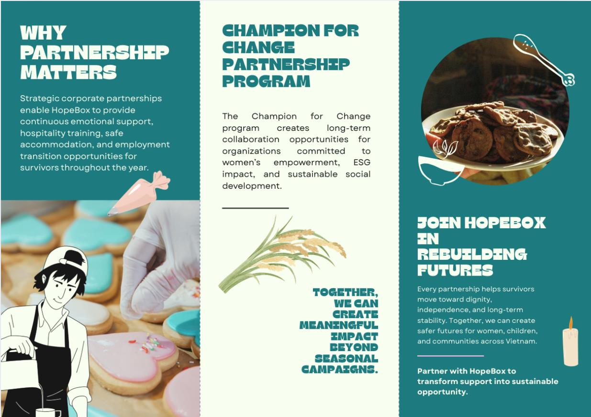
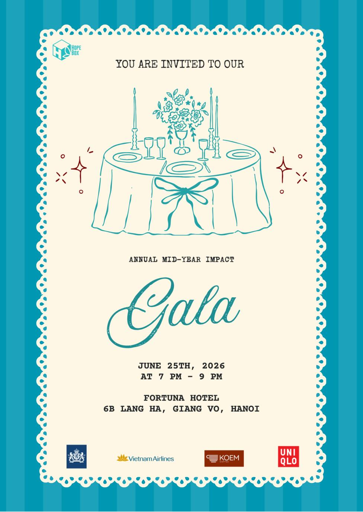
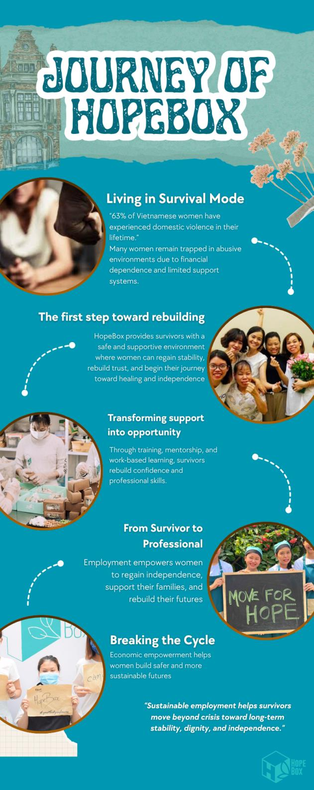
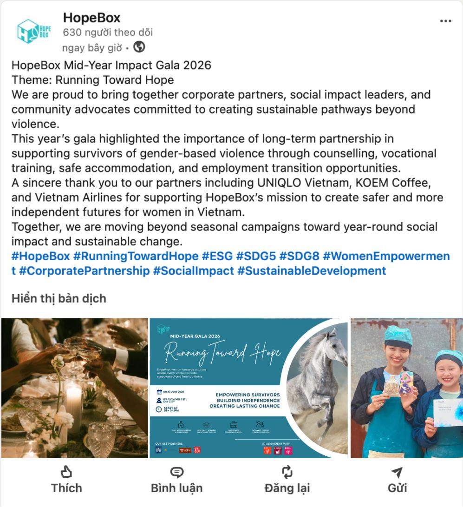
Test the idea
before calling it a solution.
The final stage defined how the concept could be evaluated through three Design Thinking lenses: desirability, viability and feasibility.
These were proposed evaluation measures for the concept, not live campaign results.
A strong report.
82 / 100.
The final Business Solution Design Report received 82/100. I served as team leader for the project, coordinating the report direction and bringing the research, solution logic and prototype system together into the final submission.
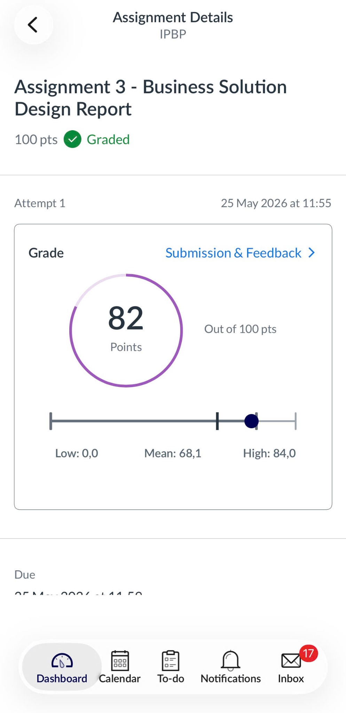
Assignment 3 — Business Solution Design Report.
The score is shown as assessment evidence, separated clearly from the proposed testing metrics above.Want the
details?
The full report and original case material are embedded below for reviewers who want the complete business context, stakeholder work, Design Thinking process, prototype development and references.